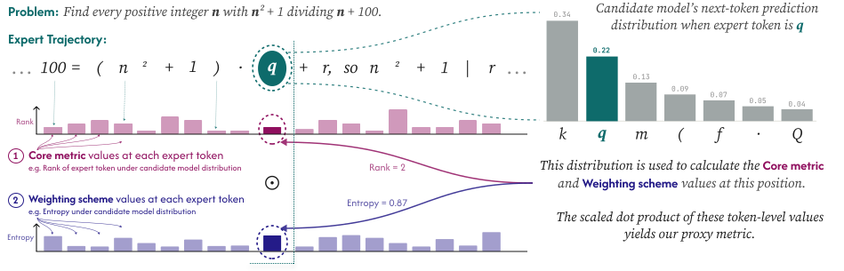
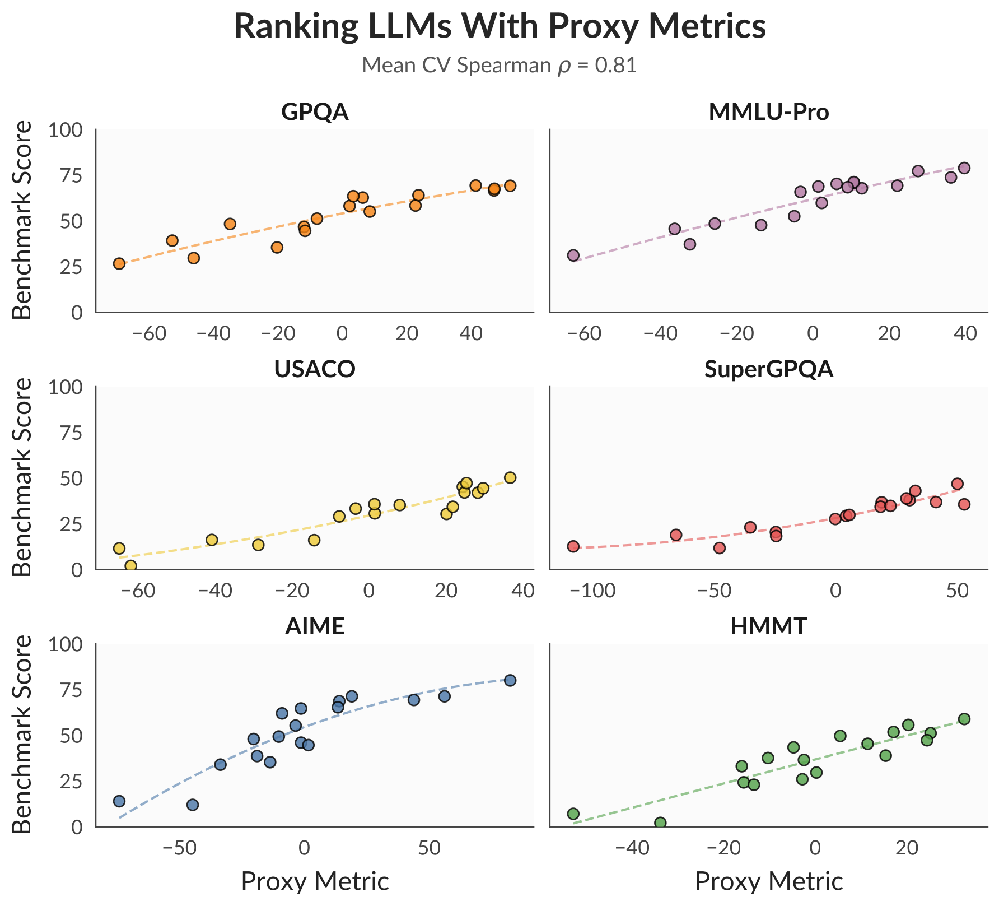
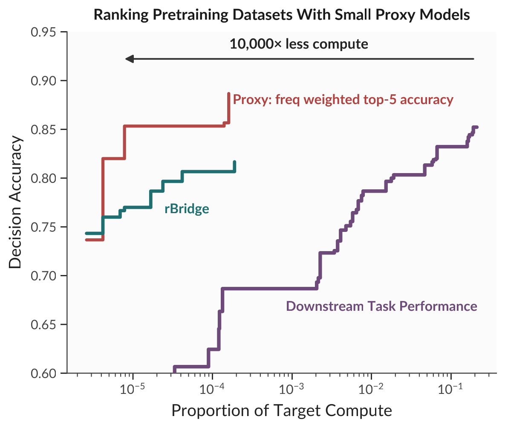
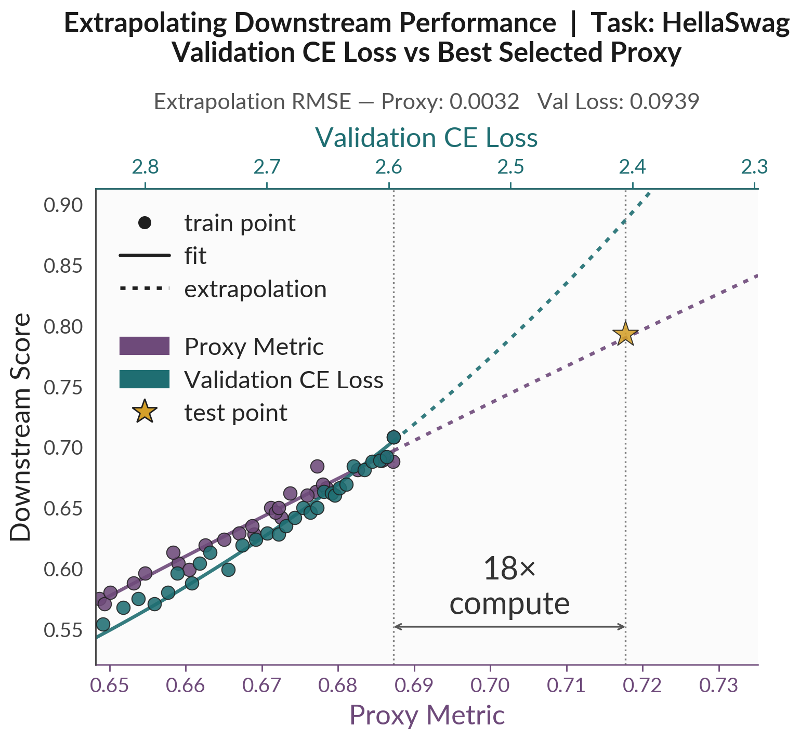

Building a language model is really a long series of comparative decisions. Which pretraining corpus is better? Does this new post-training recipe actually help on the target domain? Is this architecture worth the switch? Answering any of these well requires a forecast of the downstream performance for the tasks we care about. However, the two signals we commonly use for this are flawed:
Cross-entropy loss is wonderfully smooth: it scales predictably with compute and extrapolates with remarkable fidelity. But it is only weakly tied to the capabilities we care about. For instance, two models with nearly identical loss may behave very differently on a downstream task.1
Direct downstream evaluation is expensive, sparse, and often uninformative (e.g., at the start of training). Frontier evaluations may require human experts, code execution, or an external environment that may be inaccessible. Prior works on downstream performance estimation have often relied on benchmark performances to fit scaling laws.2, 3
In this work, we ask: is there a different signal? — one that is as smooth as loss, but as task-conditioned as evaluation?
The Idea
For the target task of interest, we assume access to expert solutions, i.e., worked-out reasoning traces, written by a human or a strong model. We believe it will always be easier to get access to a handful of expert reasoning trajectories as opposed to the full downstream environment. Our hypothesis is that by observing a model's distribution over such expert solutions, we can infer its relative capability on the task. For instance, a model that cannot yet solve a hard math problem on its own may still assign high probability to some of the crucial steps once it sees them in context.
We pass an expert trajectory through a candidate model in a single forward pass (no generation, so it is extremely cheap) and compute token-level statistics of its next-token distribution: for e.g., the entropy at each step, whether the expert's token is in the model's top-k, the rank of the expert token, and so on. These are then aggregated with weights that emphasize important positions: for e.g., low-frequency tokens, or places where the model is most uncertain. The result is a proxy metric: a single number that is cheap to compute and tightly conditioned on the task.
Crucially, the expert only needs to provide text. We never need its log-probabilities and never touch the downstream evaluator, so the same recipe works with human-written solutions or with traces from closed-weight frontier models.

Result 1 — Ranking models without running the benchmark
First, the practical question of model selection: given a pool of heterogeneous models, can we rank them on a downstream task without evaluating them on it? We fit a simple linear ranker over the proxy features on a set of held-in tasks and test it on held-out reasoning benchmarks. It recovers the true ranking with mean Spearman ρ = 0.81, compared with just 0.36 for cross-entropy loss.

Result 2 — Choosing pretraining data with ~10,000× less compute
Next, a decision made before committing real compute: which pretraining corpus should you use? On the DataDecide testbed, the goal is to rank 25 candidate corpora the way a 1B target model would rank them by downstream accuracy. We train tiny proxy models (4M–90M parameters) and score them with our proxies. This recovers the corpus ranking about as well as direct downstream evaluation while using order of 10,000× less compute, pushing the cost–accuracy frontier beyond prior methods.

Result 3 — Forecasting accuracy across training
Finally, forecasting through training. We show that we can find good proxy metrics that follow clean power laws along both pretraining and post-training trajectories. Additionally, when a handful of early benchmark scores are available, fitting downstream accuracy as a function of the proxy (rather than of loss or raw compute) extrapolates across an 18× compute horizon with roughly half the error of those alternatives.

Why this matters
The thread running through all three settings is the same: generic CE loss is smooth but task-agnostic; direct evaluation is task-specific but expensive and often uninformative early on. Proxy metrics computed over expert trajectories can give us both smoothness and task-conditioning in a single, cheap forward pass. I believe that expert solutions are an underused source of evaluation signal. Studying how a model's predictions differs from an expert's reasoning, step by step, tells us a surprising amount about what that model is capable of.
References
- Liu et al. Same Pre-training Loss, Better Downstream: Implicit Bias Matters for Language Models. ICML 2023. link ↩
- Ruan et al. Observational Scaling Laws and the Predictability of Language Model Performance. NeurIPS 2024. link ↩
- Owen. How Predictable Is Language Model Benchmark Performance?. arXiv 2024. link ↩